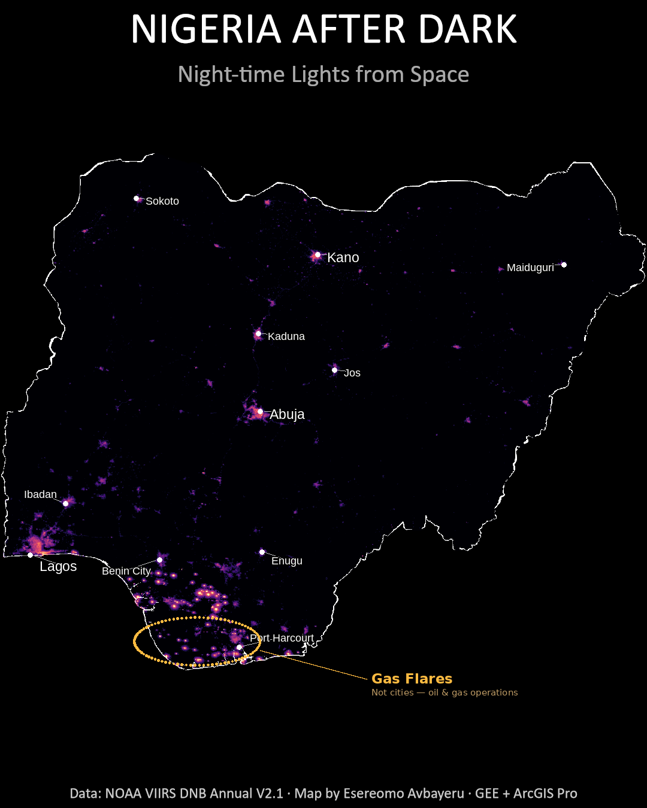
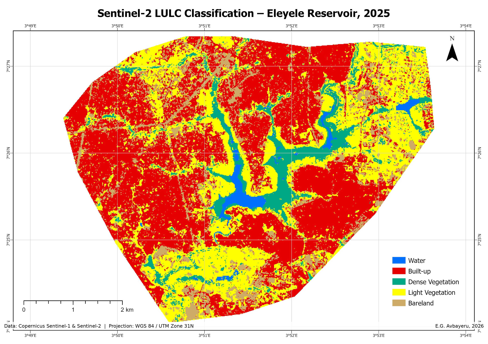
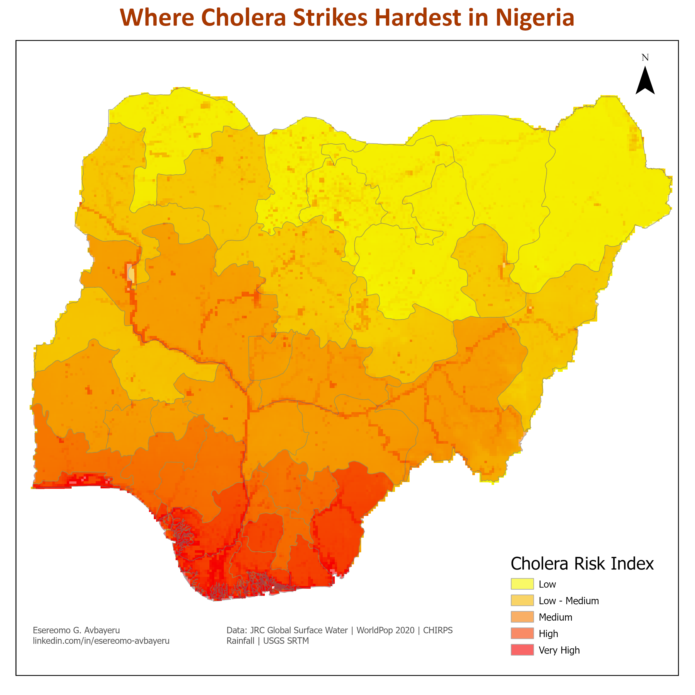

Nigeria After Dark - Nighttime Lights & Gas Flaring from Space

A VIIRS nighttime lights map separating city lights from Niger Delta gas flares, followed by a data-driven investigation into whether Nigeria's flaring is genuinely declining. Featured by GIZ Nigeria. 21,000+ LinkedIn impressions.
Eleyele Reservoir LULC - Optical vs SAR-Optical Fusion

Random Forest classification comparing Sentinel-2 alone (97.09% accuracy) against Sentinel-2 + Sentinel-1 SAR fusion (95.60%), testing whether radar actually improves land cover mapping.
Where Cholera Strikes Hardest in Nigeria - Environmental Risk Index

A composite risk index combining flood frequency, population density, rainfall, and elevation to map where cholera outbreaks are most likely when the rains come.
Ibadan North - Multi-Index Land Surface Mapping

NDVI, SAVI, NDWI, and NDBI computed and compared side by side for Ibadan North, generated entirely in Google Earth Engine.
Ibarapa East - Drainage Basin Delineation

A self-directed DEM-based hydrology exercise - delineating five sub-basins and their stream network from raw SRTM elevation data.
Spatiotemporal LULC Dynamics & Urban Growth Drivers, Edo State (1999–2024)

25 years of Landsat classification, Markov transition modelling, and landscape metrics explaining how - and why - Edo State's forest, farmland, and cities have reshuffled.
Eleyele Reservoir - Vegetation Encroachment & Water Surface Dynamics

Tracking nine years of aquatic vegetation spread and open-water loss using annual and monthly geospatial data.